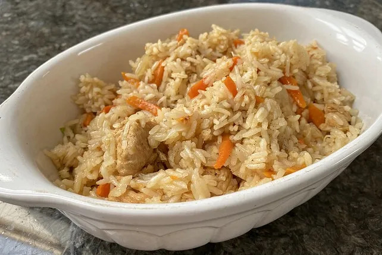

Plow

Beschreibung
Hier ein Rezept von meinem Leibgericht Plow für 4 Portionen
Zutaten
- 500 g Fleisch (Schwein, Rind, Hammel, Lamm, Kalb), im Original Lamm oder fetter Hammel
- 250 g Reis
- 500 g Möhre(n)
- 2x Zwiebel(n)
- 3x Knoblauchzehe(n)
- 1x Lorbeerblatt
- 3 TL Gemüsebrühepulver
- Salz und Pfeffer
- Fett zum Braten
Zubereitung
- Fleisch in ca. 2 - 3 cm große Würfel schneiden wie für Gulasch.
- In einem großen Topf Fett erhitzen und das Fleisch kräftig anbraten.
- Kräftig mit Salz und Pfeffer würzen.
- Zwiebeln in Streifen schneiden, Knoblauch würfeln und beides kurz mitdünsten.
- Lorbeerblätter in den Topf geben.
- Mit etwas Wasser ablöschen.
- Möhren in grobe Stifte schneiden (ca. 1 x 1 x 4 cm) und auf das Fleisch schichten, nicht umrühren!
- Den ungekochten Reis auf die Möhren schichten, nicht umrühren!
- Kräftig mit Brühpulver würzen.
- Mit so viel Wasser auffüllen, sodass der Reis ca. 2,5 cm mit Wasser bedeckt ist.
- Einen Deckel auflegen und bei kleiner Hitze ca. 30 - 45 Min. köcheln lassen, zwischendurch nicht umrühren.
- Eventuell gegen Ende noch etwas Wasser nachfüllen.
- Es soll aber keine Suppe werden, sondern die Flüssigkeit soll komplett vom Reis aufgesogen werden.
- Das Gericht vorsichtig mit einer Schaumkelle auf einer großen Platte anrichten.
Dazu schmeckt traditionell ein frischer Salat aus Tomaten, Zwiebeln und Rettich.
Home